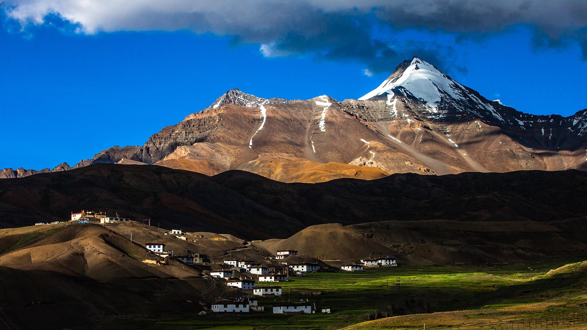
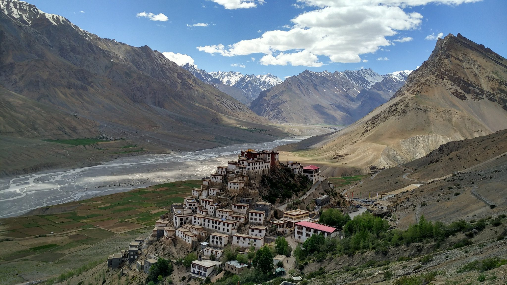
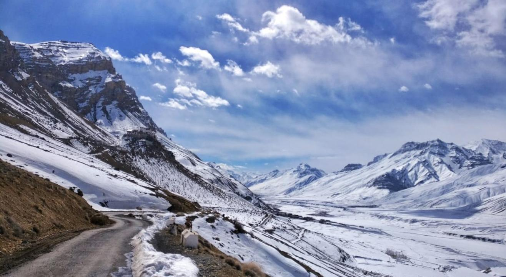
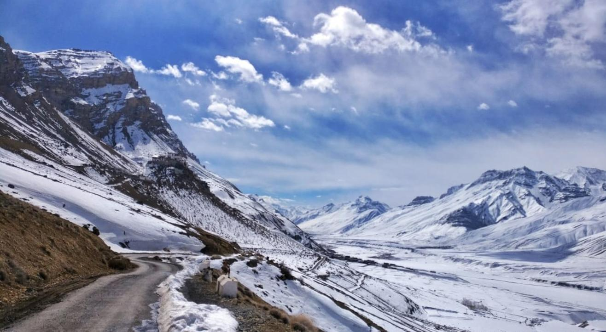
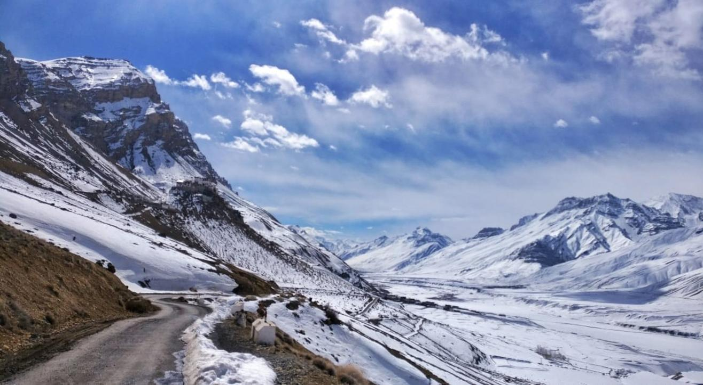

 


Spiti Circuit Offbeat Expedition
6N/7D
Starting from 30,000/- Per Person
Experience the magic of Spiti Valley with our all-inclusive tour package, designed for comfort, adventure, and raw Himalayan beauty. Explore iconic spots like Key Monastery, Chandratal Lake, Dhankar Village, and Pin Valley National Park.